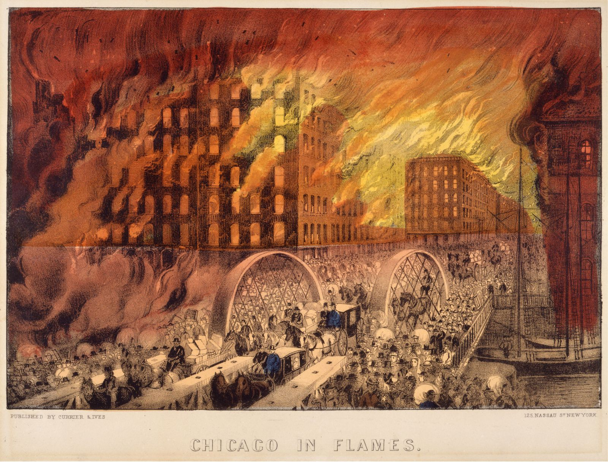
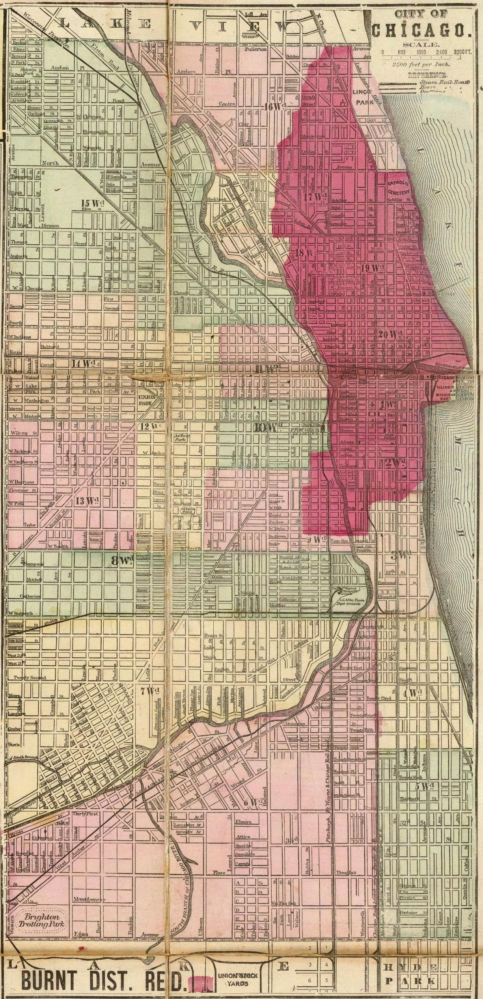
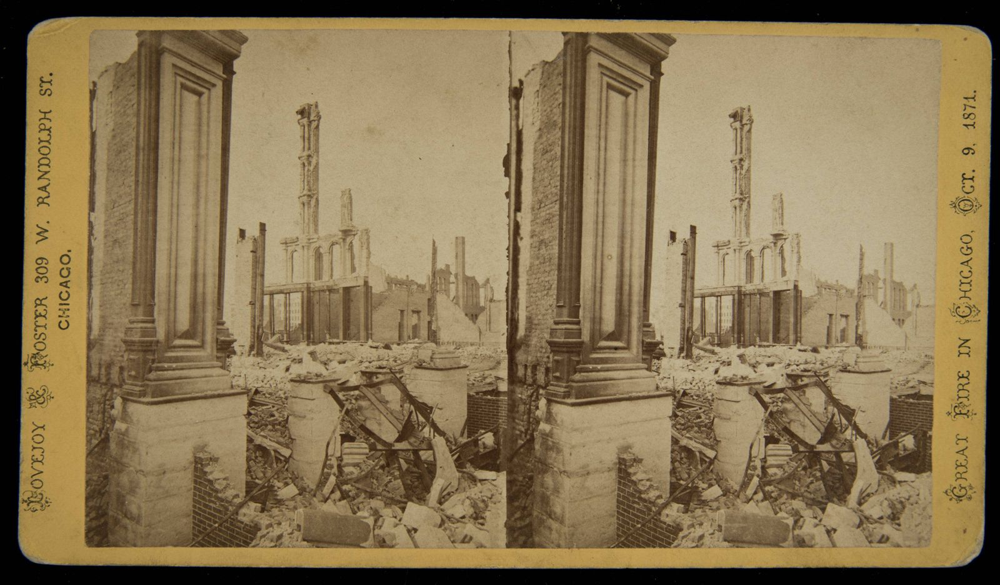
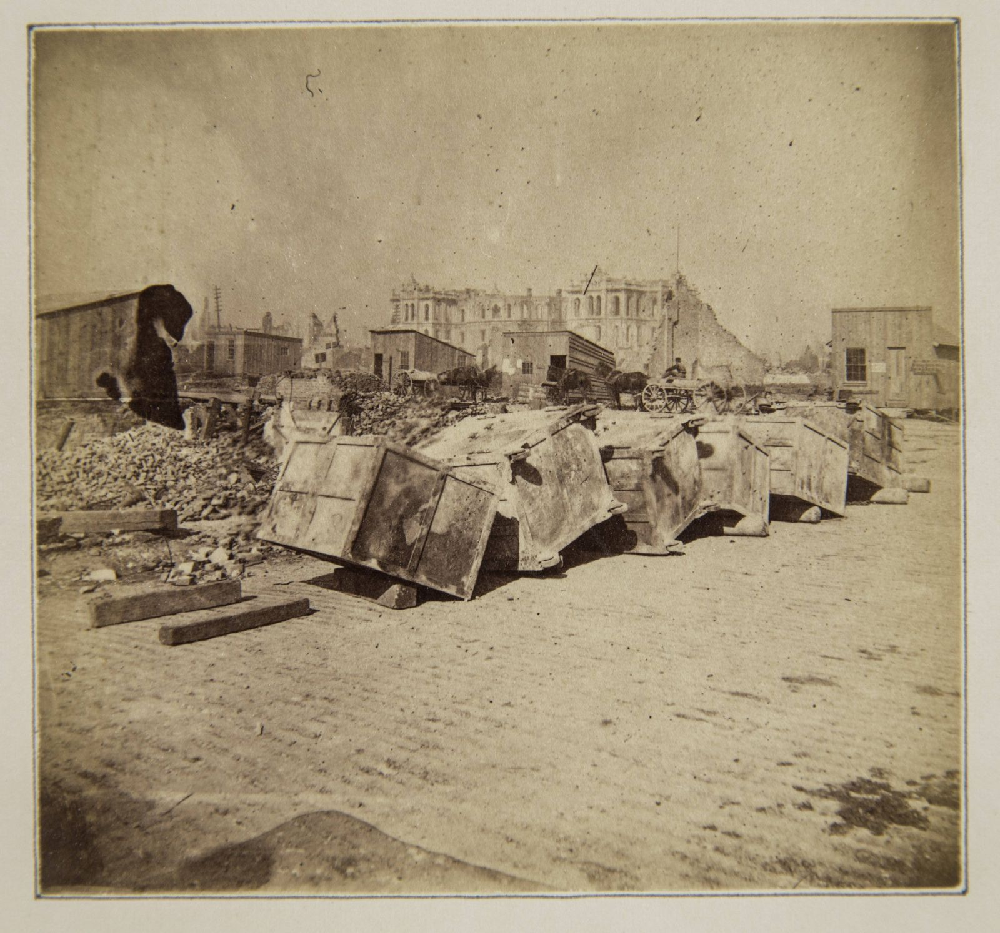

OCTOBER 8,1871.CHICAGO★BURNS.
Scroll down ↓




01
The fire broke out on a Sunday night on the city's West Side and burned until early Tuesday, October 10, about two days.
02
When it was over, about 3.3 square miles (2,100+ acres) of the city were gone, including some 17,500 buildings and the heart of downtown.
03
About 300 people died, and roughly 100,000 people, about one in three Chicagoans, lost their homes.
04
And the cow? Legend says Mrs. O'Leary's cow kicked over a lantern. But the cause was never determined, reporter Michael Ahern admitted in 1893 that the cow story was made up, and in 1997 the Chicago City Council officially cleared Catherine O'Leary and her cow.
THE FULL STORY
Watch the reel and see the sources.
Open the story page →